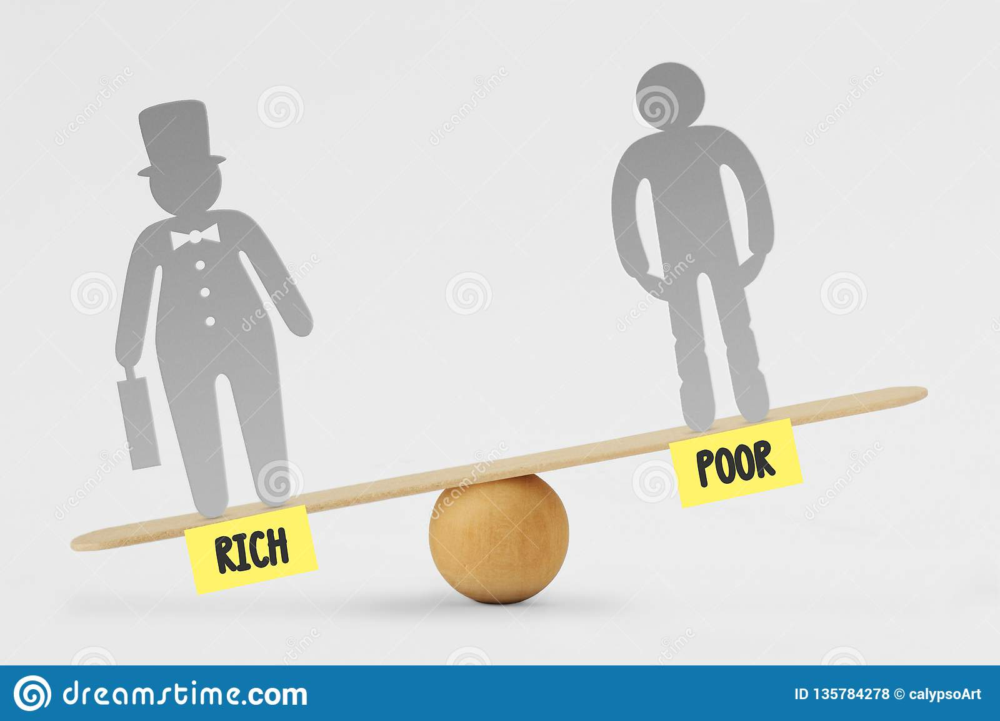
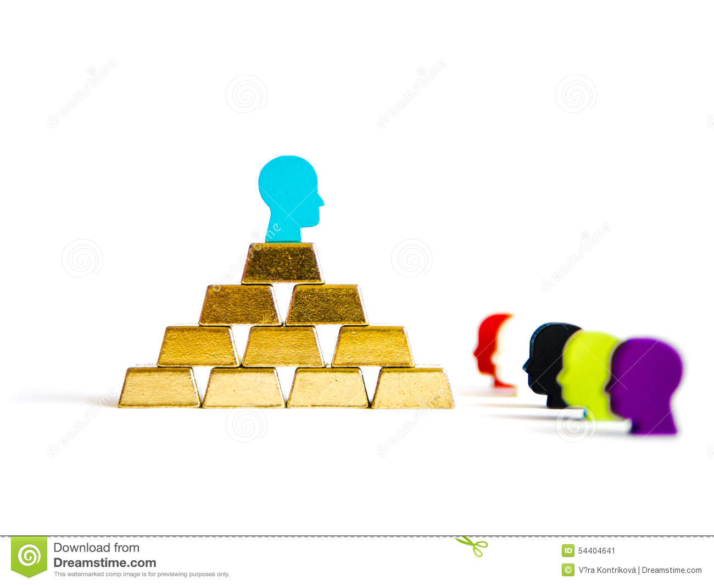

Wealth Inequality
Social Implications
Wealth inequality is one of those issues that has been becoming more and more prevelant within the United States in recent years. Socially, the idea of the elites within society holding onto the majority of the wealth doesn't sit very well with the rest of us. We like things to be fair, and certain people having more than they ever would need while some suffer seems extremely wrong to a lot of us. If social issues were the only issues that faced the United States, then this problem could easily be solved with higher taxes upon the wealthy, but unfortunatly there are many other areas at work within this complex issue regarding wealth.
Economic Implications
Economically, the issue of wealth inequality is much more difficult to solve. The idea of taking away money from the wealthy business owners leads to many other issues. Many people picture wealthy business owners as sitting around a massive stockpile of money much like Smaug from the Hobbit, but the reality is they use their money to stimulate the economy by creating their businesses, paying wages to workers, and investing into other financial assets. It sounds good in theory to just take the overly wealthy people's money, but would lead to less jobs, higher priced goods, and an overall decrease in economic productivity. In the long run, the average consumer would still end up paying for the money lost by the business whether it be purely from the higher priced products, or in many cases the jobs that used to exist becoming obsolete.
Political Implications
Within the political world, wealth inequality has been quite the hot topic. Many politicians have used this idea to pass laws, gain popularity, and even win political elections. There are quite a few differing views on the solutions to this gap in wealth between blue-collar workers and top CEO's or executives. These different solutions aren't always the same between similar viewpoints, and really can differ from politician to politician. We can also expect the topic of wealth inequality to gain even more attention in the upcoming years as more and more attention is being drawn to it.
Conclusion
All in all, the issue of wealth inequality isn't going away anytime soon, and will continue to be a major factor in many political decisions in the following years. The social aspect of this issue will continue to be extremely negative while the economic side will continue to be positive. If the world were a fair place, wealth inequality would never arise. However, the world isn't fair, and people are not the same. There are probably many greedy top executives, but the majority of them had less than prosperous years of work in order to get where they got today.